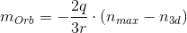
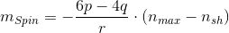
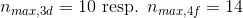
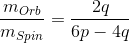
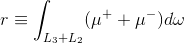
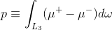
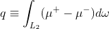
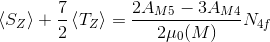
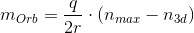
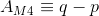

Open a *.spec data file by selecting 'File -> Open Spec File'. A Dialog opens displaying the file system on the left hand side and two selection frames on the right. Once a *.spec file is selected, the top right frame shows the scans in the file. Notice that the scan also can be an analysis file with the analyzed data divided into scans. If you used the XLD/XMCD Plugin of PyMca, the typical analysis file includes one or more scans that correspond to each analysis stored in the file. Once a scan has been selected, the bottom frame on the left shows the counters. One must define the counters used as x-axis as well as the XAS counter resp. the XMCD counter.
Once the selection is done, the program has the information required to perform the analysis. Click "Open" to load the data. The empty plot window in the top part of the application typically shows the XMCD spectrum in blue and the XAS spectrum in red. The bottom part of the window contains three tabs titled 'ELEMENT', 'BACKGROUND' and 'INTEGRATION'.
The analysis starts by specifying the sample in the first tab 'ELEMENT' (Shortcut: F2). From the drop down menu in the bottom left select the electron shell and the element and set the electron occupation of the outer shell. From the drop down menus in the bottom right select the absorption edges probed in the experiment. The edge values can be defined more precisely later on and the values selected in the 'ELEMENTS' tab mainly tell the program how many edges to consider.
The next step in the analysis is the sustraction of a background from the XAS spectrum. Switch to the 'BACKGROUND' tab (Shortcut: F3). A click on the estimate button (shortcut: CRTL+E), located in the middle right part of the programm, tells it to guess initial values for certain markers relevant to the background subtraction. The markers divide the XAS spectrum in three regions: pre-edge, post-edge and the region containing the absorption edges.
The model itself consists of one or two Gaussian error functions whose turning points coincide with the absorption edges. Slide the markers to the absorption edges by clicking and dragging the markers labeled 'Edge 1' and as the case may be 'Edge 2'. Every change done in this way automatically updates the model. Pre- and Post-edge regions define the constant model offsets before and after the steps by calculating the arithmetic mean over the data points inside the respective regions. Set the markers 'Pre Edge Min', 'Pre Edge Max', 'Post Edge Min', 'Post Edge Max' accordingly. Two values are missing to entirely define the module: the step width and, in case of a two-step model, the ratio between the two steps. These values can be adjusted in the bottom right corner of the 'BACKGROUND' tab. If the cursor is inside the according the selection boxes, one can use the up and down arrow keys on the keyboard to adjust the values.
Notice that the model is not fitted but only adjusted by eye. The user is encouraged to alter the quantities defining the background module during an analysis to validate the reliability of the method.
For the final step of the analysis switch to the 'INTEGRATION' tab (shortcut: F4). The plot window shows three curves: the corrected XAS absorption spectrum and the cumulative integral of both the XMCD and the XAS spectra. In the top left corner of the tab one can find markers corresponding to the integrals used to calculate the orbital and the spin magnetic moment. The latter values are displayed on the top right corner of the tab. Click the estimate button to assign an initial value to the markers. Markers p and q acts on the integral of the XMCD spectrum, marker r acts on the integral of the XAS spectrum (c.f. Section Theory for the equations).
3d samples
We use equations (1) and (2) from Chen et. al. to obtain the equations used by the present application. The orbital angular momentum is calculated using
while the spin angular momentum is given by

where the n define the maximal and average electron occupation of the 3d shell. The latter is given by

The ration of the above expressions simplifies to

Both equations for orbital and spin magnetic moment the parameter p, q and r which are obtained from the integrals certain features of the absorption and the difference spectra. Following the paper of Chen et. al., we treat the case of a 3d material. The parameter r is given by the integral over the whole range of the absorption spectrum:

Here a factor 2 is introduced by the way the XAS absorption spectrum is calculated. Instead of summation over both polarizations, the application assumes the XAS absorption is calculated as the mean of the differently polarized spectra.
Integral p considers the L3 absorption edge feature of the difference (XMCD) spectrum

while intergral q considers the L2 absorption edge feature in the same spectrum

The μs are given by the absorption spectrum recorded at different polarizations. Thus in the last three equations, the expression in parentheses is either the XAS spectrum (r: +) or the XMCD spectrum (p,q: -).
4f samples
In case of 4f samples, the present application uses equations (2) and (3) from Krishnamurthy et. al.. The orbital angular momentum is calculated using
while the spin angular momentum is given by

where the N_4f define the number of holes in the 4f shell. For 3d and 4f shells, the maximal occupation is

The equations used to calculate the magnetic moments thus reduce to

and

The ratio of both moments is calculated the ratio of the two latter equations. Both equations for orbital and spin magnetic moment are derived by assuming

and

where p is the integral of the XMCD spectrum up to the first absorption edge and q is the integral of the XMCD spectrum over the second absorption edge. The μ_0 is given by the integral of the mean of the XAS spectrum obtained from spectra recorded with different polarizations.
The application uses the method
magneticMoment in the class Calculations of SumRulesTool.py.